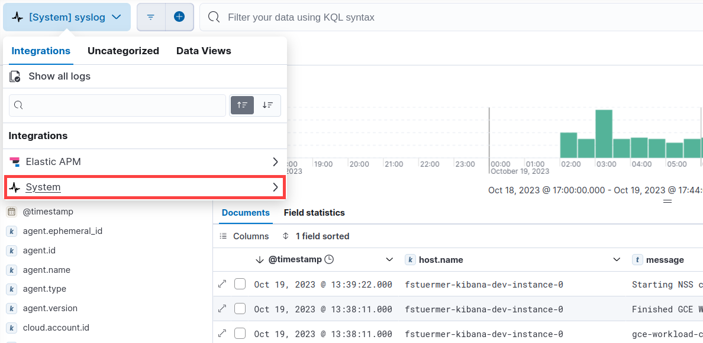

Get started with system logs
editRequired role
The Admin role or higher is required to onboard log data. To learn more, refer to Assign user roles and privileges.
In this guide you’ll learn how to onboard system log data from a machine or server, then observe the data in Logs Explorer.
To onboard system log data:
- Create a new Elastic Observability Serverless project, or open an existing one.
- In your Elastic Observability Serverless project, go to Add data.
- Under What do you want to monitor?, select Host → Elastic Agent: Logs & Metrics.
- Follow the in-product steps to auto-detect your logs and install and configure the Elastic Agent.
After the agent is installed and successfully streaming log data, you can view the data in the UI:
- From the navigation menu, go to Discover and select the Logs Explorer tab. The view shows all log datasets. Notice you can add fields, change the view, expand a document to see details, and perform other actions to explore your data.
- Click All log datasets and select System → syslog to show syslog logs.

Next steps
editNow that you’ve added system logs and explored your data, learn how to onboard other types of data:
To onboard other types of data, select Add Data from the main menu.